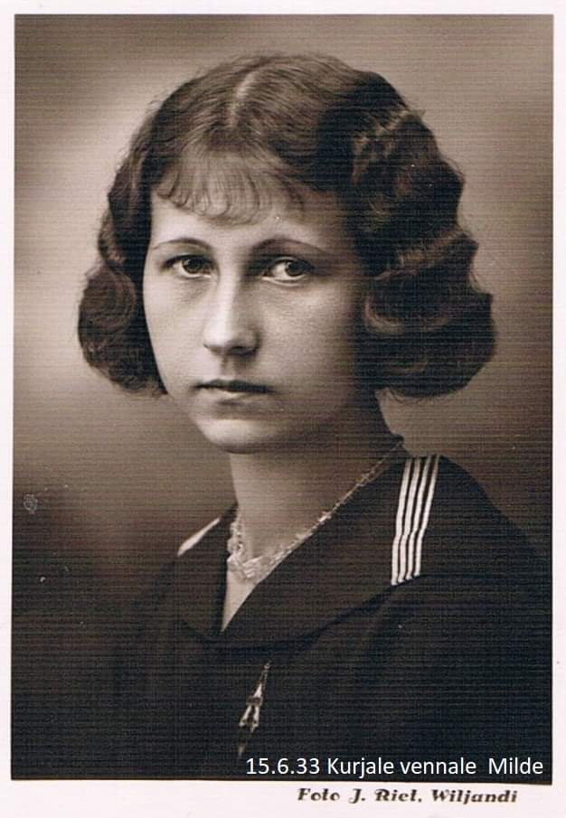
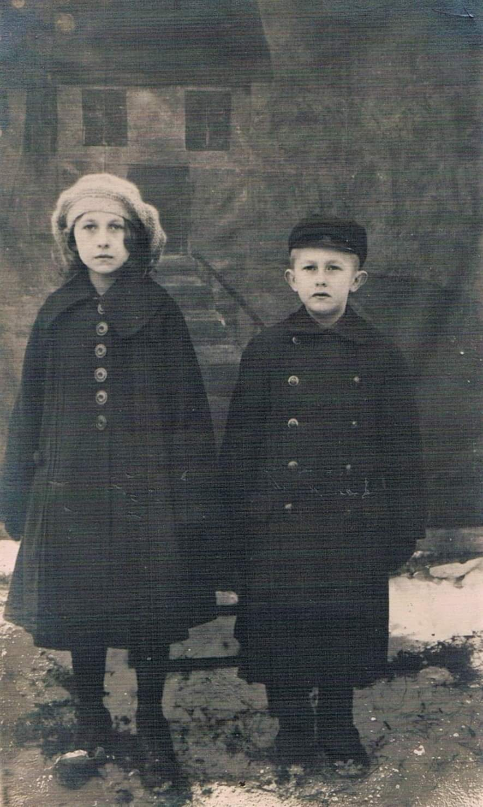
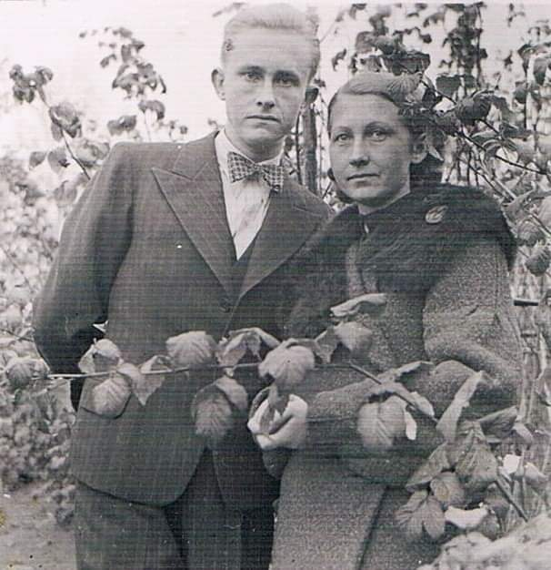
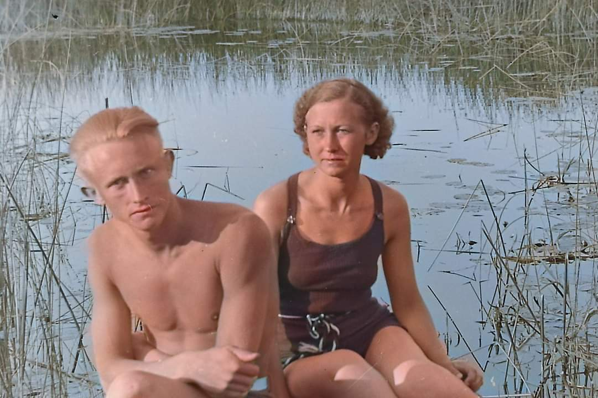

Fotoalbum

Sirje Viljandi Haridusseltsi Tütarlaste Gümnaasiumi lõpetamisel 1933. Hiljem töötas Võhmas õpetajana.

Õde ja vend - Armilda-Elfriede ja Arnold-Friedrich 1914.

Nüüd Sirje ja Aarne.

Sirje ja Aarne Navesti ääres 1938.